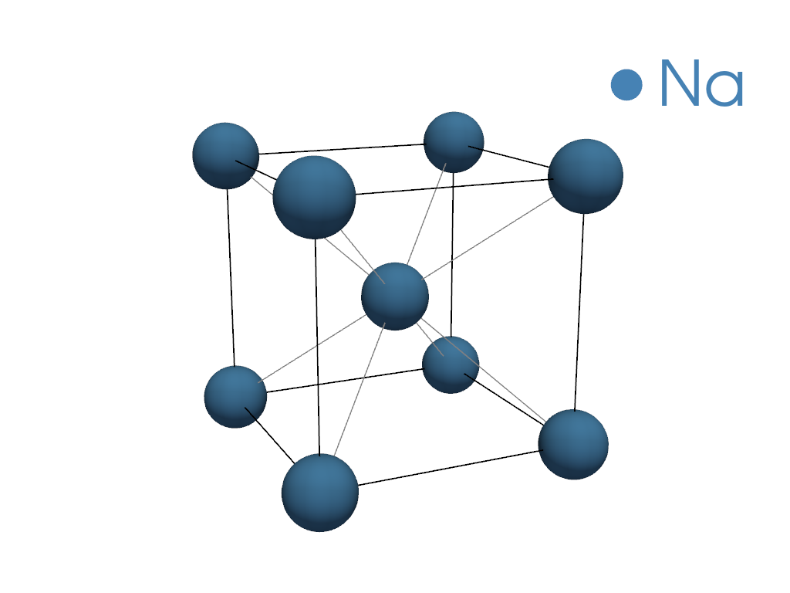
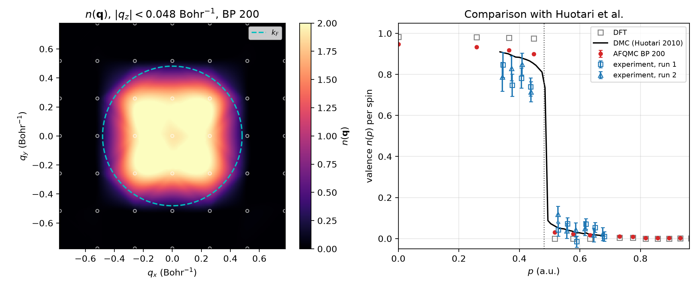

Download this notebook (.ipynb + data files)
3. Momentum distribution of solid Na#
In this example, we compute the valence momentum distribution \(n(\mathbf{q})\) of bcc sodium with back-propagated AFQMC and compare it with the Compton-scattering experiment and DMC of Huotari et al., Phys. Rev. Lett. 105, 086403 (2010).
3.1. System#
We use the 2-atom cubic cell of bcc Na at the density of the experiment, \(r_s = 3.99\), which gives \(a = 8.1036\) Bohr (4.288 Å). The ccECP pseudopotential has a Ne core, so each atom has 1 valence electron. A \(3\times3\times3\) k-point mesh makes the AFQMC supercell 54 atoms with 54 electrons, which fill the free-electron shells 1 + 6 + 12 + 8 per spin exactly.

3.2. Momentum distribution from the one-body density matrix#
SAFIRE measures the one-body density matrix in the basis of Kohn-Sham Bloch orbitals, \(\rho_{ij}(\mathbf{k}) = \langle c^\dagger_{i\mathbf{k}} c_{j\mathbf{k}} \rangle\), which is block-diagonal in \(\mathbf{k}\). Expanding each orbital in plane waves, \(\psi_{i\mathbf{k}}(\mathbf{r}) \propto \sum_\mathbf{G} c_{i\mathbf{k}}(\mathbf{G})\, e^{i(\mathbf{k}+\mathbf{G})\cdot\mathbf{r}}\), gives the occupation of momentum \(\mathbf{q} = \mathbf{k}+\mathbf{G}\):
The density matrix does not commute with the Hamiltonian, so we use the back-propagated estimator
(see Computing general observables).
The plane-wave coefficients come from the QE wavefunction files, and files/nq_tools.py does the unfolding.
Each step is skipped when its output already exists in data/.
Set QE_BIN to the directory holding pw.x and pw2coqui.x, and COQUI_EXEC and AFQMC_EXEC to the
CoQuí and SAFIRE executables.
import csv
import shutil
from pathlib import Path
import h5py
import matplotlib.pyplot as plt
import numpy as np
from safiretools import Results, write_jobfile
from safiretools.wavefunction.base import Wavefunction
from files.nq_tools import fermi_wavevector, plot_slab, radial_average, read_qe_orbitals, unfold_nq
NP = 12 # MPI ranks
data = Path("data")
for step in ["1_dft_qe", "2_coqui"]:
shutil.copytree(Path("files") / step, data / step, dirs_exist_ok=True)
(data / "3_safire").mkdir(exist_ok=True)
3.3. Step 1: DFT with Quantum ESPRESSO#
An scf run on an \(8\times8\times8\) mesh gives the density, and an nscf run computes 40 bands on the
\(3\times3\times3\) mesh without symmetry reduction. pw2coqui.x converts the result for CoQuí.
if not (data / "1_dft_qe/OUT/pwscf.coqui.h5").exists():
!cd {data}/1_dft_qe && mpirun -n {NP} $QE_BIN/pw.x -in scf.in > scf.out
!cd {data}/1_dft_qe && mpirun -n {NP} $QE_BIN/pw.x -in nscf.in > nscf.out
!cd {data}/1_dft_qe && $QE_BIN/pw2coqui.x -in pw2coqui.in > pw2coqui.out
3.4. Step 2: Hamiltonian and trial wavefunction with CoQuí#
CoQuí writes the Hamiltonian in the basis of the lowest 19 bands per k (513 orbitals), with Cholesky-decomposed two-electron integrals, and the Kohn-Sham determinant as the trial wavefunction. 19 bands reach about 19 eV above the Fermi energy without splitting a degenerate level.
!cat {data}/2_coqui/input.toml
if not (data / "2_coqui/hamiltonian.h5").exists():
!cd {data}/2_coqui && mpirun -n {NP} $COQUI_EXEC input.toml > coqui.out
with h5py.File(data / "2_coqui/hamiltonian.h5") as f:
kpoints = f["System/BZ/kpoints"][...]
volume = abs(np.linalg.det(f["System/lattice_vectors"][...]))
occ = f["Orbitals/occ"][...] # Kohn-Sham occupations per spin, (1, nk, M)
nk, M = occ.shape[1:]
k_F = fermi_wavevector(volume, 2) # 2 valence electrons per cell
print(f"nk = {nk}, NMO = {nk * M}, k_F = {k_F:.4f} Bohr^-1")
3.5. Step 3: Run AFQMC#
CoQuí writes a collinear trial with identical spin determinants. We rebuild it as a closed-shell trial,
so that SAFIRE can use closed-shell walkers, which propagate one spin.
The back-propagated density matrix is measured with 50, 100, 150 and 200 back-propagation steps.
A new window starts every 200 steps after equilibration, so each length gives one sample per window,
and binsize is 1.
alpha, beta = Wavefunction.from_hdf5(data / "2_coqui/wfn.h5").determinant(0)
assert np.allclose(alpha, beta)
write_jobfile(data / "3_safire/afqmc.json", {
"seed": 7,
"execute": {
"walker_set": {"walker_type": "closed"},
"wavefunction": Wavefunction.from_single_determinant(alpha),
"hamiltonian": {"filename": "../2_coqui/hamiltonian.h5"},
"timestep": 0.01,
"steps": 5000,
"equilibration_steps": 600,
"binsize": 1,
"measure_interval": 10,
"population_control_interval": 10,
"walker_ortho_interval": 10,
"num_walkers": 120,
"estimators": {
"energy": {"measure_interval": 100},
"mixed": {"measure_interval": 100, "onerdm": {}},
"backprop": {"propagation_steps": [50, 100, 150, 200], "onerdm": {}},
},
},
})
if not (data / "3_safire/afqmc.results.h5").exists():
!cd {data}/3_safire && mpirun -n {NP} $AFQMC_EXEC afqmc.json > afqmc.out
results = Results(data / "3_safire/afqmc.results.h5")
3.6. Step 4: Momentum distribution#
We unfold the Kohn-Sham occupations for the DFT \(n(\mathbf{q})\), and the back-propagated density matrix inside
Results.evaluate for jackknife error bars on its radial average.
Each back-propagation length has 22 bins, which we keep with rebinsize=1.
qvecs, coeffs = read_qe_orbitals(data / "1_dft_qe/OUT/pwscf.save", kpoints, M)
qmag = np.linalg.norm(qvecs, axis=1)
edges = np.linspace(0, 2.5 * k_F, 81)
q_bins = radial_average(qmag, qmag, edges)[0]
def radial_nq(rdm):
return radial_average(qmag, unfold_nq(rdm, coeffs), edges)[1]
n_dft = radial_nq(np.diag(occ.ravel())[None])
bp = {}
for L in [50, 100, 150, 200]:
bp[L] = results.evaluate(radial_nq, [f"BackPropEstimator/Steps={L}/OneRDM"], rebinsize=1)
above = np.argmax(q_bins > k_F) # first radial bin above k_F
print(f"n(q) at |q| = {q_bins[above]:.3f} Bohr^-1: DFT {n_dft[above]:.3f}")
for L, (n, dn) in bp.items():
print(f" BP {L:3d}: {n[above]:.3f} +/- {dn[above]:.3f}")
Back propagation moves electrons above \(k_F\), and the amount still grows with the back-propagation length. Back propagation becomes unstable at long lengths, so we use 200 steps (\(\tau = 2\) Ha\(^{-1}\)) and keep in mind that the result depends on this choice.
3.7. Comparison with DMC and experiment#
The experimental and DMC data were extracted from Fig. 1 of Huotari et al. and are per spin, so we divide ours by 2. Our cell has the experimental density, so we compare on absolute momentum.
with open("files/huotari2010_fig1_nofp.csv") as f:
rows = list(csv.DictReader(line for line in f if not line.startswith("#")))
def huotari(series, *columns):
return np.array([[float(r[c]) for c in columns] for r in rows if r["series"] == series]).T
bp_rdm, _ = results.average("BackPropEstimator/Steps=200/OneRDM", rebinsize=1)
fig, (ax0, ax1) = plt.subplots(1, 2, figsize=(11, 4.5))
plot_slab(ax0, qvecs, unfold_nq(bp_rdm, coeffs), k_F)
ax0.set_title(ax0.get_title() + ", BP 200")
ax1.plot(q_bins, n_dft / 2, "s", color="0.5", mfc="none", ms=6, label="DFT")
n, dn = bp[200]
ax1.errorbar(q_bins, n / 2, yerr=dn / 2, fmt="o", color="C3", ms=4, capsize=2, label="AFQMC BP 200")
p, n = huotari("QMC", "p_au", "n")
ax1.plot(p, n, "k-", lw=1.5, label="DMC (Huotari 2010)")
for series, marker, label in [("exp_run1", "s", "experiment, run 1"), ("exp_run2", "^", "experiment, run 2")]:
p, n, dn = huotari(series, "p_au", "n", "n_err")
ax1.errorbar(p, n, yerr=dn, fmt=marker, color="C0", mfc="none", ms=5, capsize=2, label=label)
ax1.axvline(k_F, color="0.3", ls=":", lw=1)
ax1.set(xlabel=r"$p$ (a.u.)", ylabel=r"valence $n(p)$ per spin", xlim=(0, 2 * k_F), ylim=(-0.05, 1.05),
title="Comparison with Huotari et al.")
ax1.grid(alpha=0.3)
ax1.legend(fontsize=8)
fig.tight_layout()
fig.savefig(data / "nq_Na.png", dpi=200)

The left panel shows the back-propagated \(n(\mathbf{q})\) in the \(q_z = 0\) plane, with the Fermi sphere dashed. On the right, our points are drawn without connecting lines, because the \(3\times3\times3\) mesh samples only a few shells of \(|\mathbf{q}|\). Back propagation moves the DFT result toward DMC on both sides of \(p_F\), but not all the way: just above \(p_F\) its tail is about half of DMC’s, and by \(1.3\,p_F\) it is close to DMC and within the experimental scatter, where DFT gives zero. The remaining difference comes from the limits of this calculation: the dependence on the back-propagation length, the 19-band basis, and the lack of a finite-size correction.